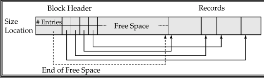
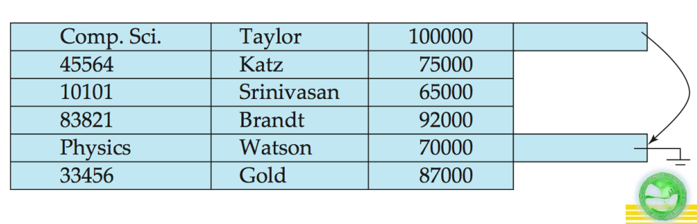
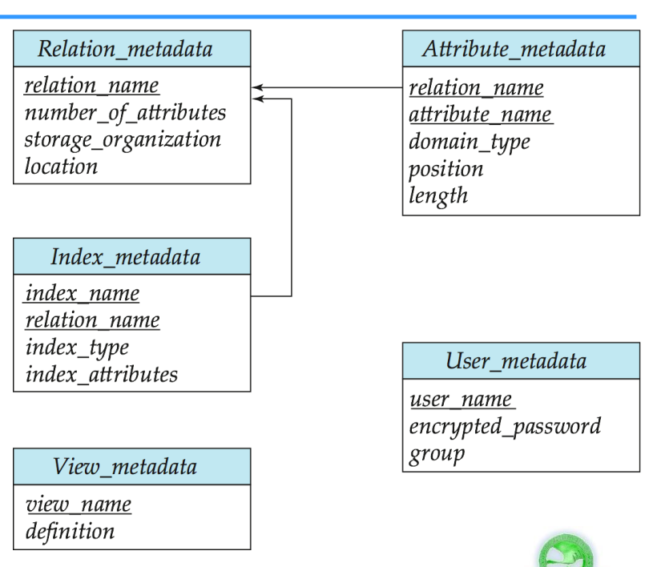

Data Storage Structures
Storage Access
A database file is partitioned into fixed-length units called blocks. Blocks are units of both storages allocation and data transfer.
Database system seeks to minimize the number of block transfers between the disk and memory and try to keep as many blocks in main memory. Buffer is the portion of main memory available to store copies of disk blocks. And buffer manager is the subsystem responsible for all allocating buffer space in main memory.
Buffer Manager
If the block is already in the buffer, the requesting program is given the address of the block in main memory. If the block is not in the buffer:
- The buffer manager allocates space int the buffer for the block, replacing (throwing out) some other block, if required, to make space for the new block.
- The block is thrown out is written back to disk only if it was modified since the most recent time that it was written to/fetched from the disk.
- Once space is allocated in the buffer, the buffer manager reads the block from the disk to the buffer, and passes the address of the block in main memory to requester.
Buffer Replacement Policies
Least recently used (LRU) strategy is used by most operating system to replace block, but can be a bad strategy for database buffer manager.
Pinned block is that memory block is not allowed to be written back to disk.
There are also forced output and Toss immediate strategies.
File Organization
The database is stored as collection of files. Each file is a sequence of records, A record is a sequence of fields. Files are provided as a basic construct in OS, The records are mapped onto disk blocks.
Recors can be fix-length and variable-length. For fixed-length records, store record starting from byte , where is the size of each record. Record access is simple but records may cross blocks. So do not allow records to cross block buundaries. And there are three alternatives for deletion of record:
- Move record to
- Move record to
- Do not move record, but links all free records on a free list
Free List: store the address of the first deleted record in the file header. Use this first record to store the address of the second deleted record and so on. Using free list can lead to more space efficient representation: reuse spce for normal attributes of free records to store points.
Variable length records arise in database systems in several ways:
- Storage of multiplx record types in a file
- Record types that allow variable lengths for one or more fields
- Record types that allow repeating fields
Can store variable-length records in byte string representation and attact a end of record control character to the end of each record but result in difficulty with deletion and growth.
Slotted Page Structure

Slotted page header contains:
- number of record entities
- end of free space in the block
- location and size of each record
Records can be moved around within a page to keep then contigous with no empty space between them, entry in the header must be updated. Pointers should not point directly to record, instead they should point to the entry for the record in header.
To store records than bigger than pages, e.g. blob clob types:
- Store as files in file system
- Store as files managed by database
- Break into pieces and store in multiple tuples in separate relation
Organization of Records in Files
Heap File Organization
Records can be placed anywhere in the file where there is free space. Once allocated, records usually do not move.
This is important to be able to efficiently find free space within file. So design free space map:
- Array with 1 entry per block. Each entry is a few bits to a byte and records fraction of block that is free
- Can have second-level free-space map
Sequential File Organization
Suitable for application that requires sequential processing of the entire file. The records in the file are ordered by a search-key. Deletion uses pointer chain and insert need to locate the position where the record is to be inserted:
- If there is free space then insert there
- If there is no free space then insert the record in an overflow block
In both case, point chain must be updated. And need to reorganize the file from time to time to restore sequential order.
Multitable Clustering File Organization
Store several relations in one file using a clustering file organization.

Such structure is good for queries involving department and instructor and for queries involving one single department and its instructors. But bad for queries involving only department. And may result in variable size record.
Can add pointer chain to link records of a particular relation. For example, in image below we add a pointer chain for department.

Data Dictionary Storage
Data dictionary, also called system catalog, stores metadata, such as :
- Information about relations
- Names of relations
- Names and types of attributes of each relation
- Names and definitions of views
- Integrity constraints
- User and accounting information including password
- Statistical and descriptive data
- Number of tuples in each relation
- Physical file organization information
- How relation is stored
- Physical location of relation, such as operating system filename or disk addresses of blocks containing records of the relation
- Information about index

There are two catalog structures to store:
- Specialized data structures designed for efficient access
- A set of relations, with existing system features used to ensure efficient access
Relational representation on disk, and specialized data structures designed for efficient access in memory.
Column Oriented Storage
Also known as columnar representation, store each attribute of a relation separately.
The benefits are:
- Reduced IO if only some attributes are accessed
- Improved CPU cache performance
- Improved compression
- Support vector processing on modern CPU architectures
The drawbacks are:
- Cost of reconstrcution from columnar representation
- Cost of tuple deletion and update
- Cost of decompression
Columnar representation found to more efficient for decision support than row oriented representation as traditional row oriented representation preferable for transaction processing.